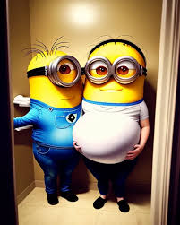
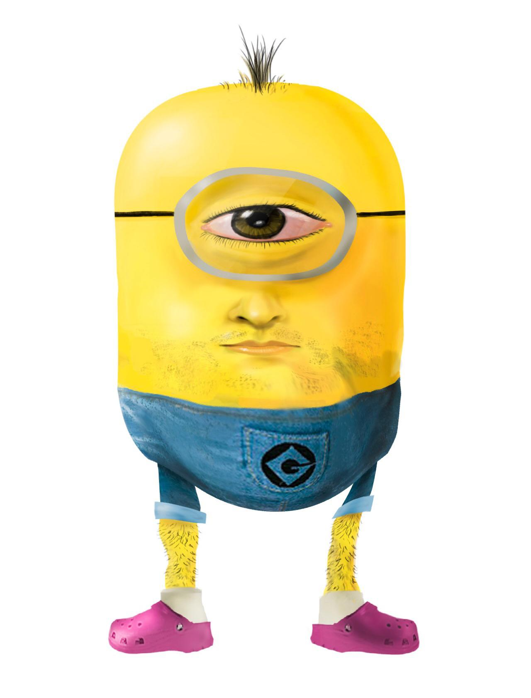

Na vastidão da cultura pop contemporânea, poucas criações conseguiram o feito de transcender gerações e se tornarem ícones universais da comédia animada. Os Minions, essas pequenas entidades amarelas de forma cilíndrica, olhos expressivos e vocabulário inusitado, conquistaram não apenas crianças, mas também adultos ao redor do planeta. A Rede Malalo surge como um ponto de encontro para todos os fascinados por essa mitologia moderna que se formou em torno dos nossos amiguinhos trapalhões.
Mais do que simples coadjuvantes de um vilão regenerado, os Minions representam uma metáfora viva sobre a busca por pertencimento, liderança, e o eterno atrito entre o caos e a ordem. Ao embarcar neste espaço, o visitante se conecta com uma narrativa rica em simbologia, humor anárquico e subversão de expectativas. Prepare-se para rir, pensar e talvez até se emocionar. Bem-vindo ao universo dos verdadeiros malalos.
Estudos fictícios baseados na cronologia apresentada pelos filmes revelam que os Minions existem desde os primórdios da Terra. Eles evoluíram, ou melhor, foram moldados, para servir os seres mais malignos do planeta. Dinossauros, faraós, imperadores romanos, vampiros e outros vilões da história contaram com o auxílio (ou a tragédia) causada por esses fiéis, porém desastrados, companheiros.
A lealdade absoluta dos Minions não está necessariamente atrelada à moralidade, mas sim à função. Isso nos leva a uma reflexão filosófica profunda: será que o desejo de servir e pertencer é maior que o julgamento do bem e do mal? Esta questão, por mais cômica que pareça num filme de animação, ecoa discussões éticas reais em sociedades humanas. E assim, sob uma camada de piadas e banana, esconde-se um comentário sutil sobre a natureza da obediência e o papel do indivíduo frente às estruturas de poder.
Os Minions não apenas possuem nomes próprios, como Kevin, Stuart e Bob, mas também um idioma próprio — o lendário "Minionês". Este idioma não é apenas uma criação aleatória, mas uma fusão de palavras reais de diversas línguas, como inglês, francês, espanhol, italiano, além de sons infantis e onomatopeias. Linguistas e fãs analisaram frases como “Para tu!” ou “Kanpai!” e encontraram verdadeiras pérolas linguísticas que transformam a comunicação dos Minions em um fenômeno semiótico.
Além disso, a estrutura social dos Minions é horizontal e baseada em uma forma de anarquia organizada. Não há um líder fixo entre eles — ainda que Kevin muitas vezes assuma esse papel em momentos de necessidade. Sua sociedade funciona por meio do caos cooperativo, onde o erro coletivo gera um acerto inesperado. Essa mecânica comportamental levanta questionamentos sobre modelos alternativos de organização social que não se baseiam em hierarquia rígida, mas sim em afinidades emocionais e espontaneidade.
Kevin representa o arquétipo do herói clássico — corajoso, proativo e com um forte senso de responsabilidade. Ele não é apenas o líder por acaso, mas por sua constante tentativa de guiar seus companheiros através das adversidades, mesmo quando o fracasso é inevitável.
Stuart, por outro lado, encarna o arquétipo do artista. Ele é o espírito livre, musical, um pouco preguiçoso, mas cheio de carisma. Stuart representa a beleza da existência despreocupada e nos lembra que nem toda missão precisa ser levada tão a sério.
Já Bob, talvez o mais carismático de todos, é o símbolo da pureza. Sua visão do mundo é ingênua, mas encantadora. Bob não apenas vê o melhor em tudo, como também inspira os outros a fazerem o mesmo. Seu olhar bicolor e seu urso de pelúcia são ícones da ternura em um mundo caótico.
Os Minions extrapolaram a tela do cinema e invadiram a cultura digital com uma força poucas vezes vista. Seus vídeos se tornaram virais, usados em memes, gifs, campanhas publicitárias e até como mensagens motivacionais (muito mal traduzidas) no WhatsApp das tias. Mas por que esse fenômeno? A resposta está na comunicação visual universal dos Minions. Seus gestos exagerados, expressões faciais universais e comportamento imprevisível os tornam compreensíveis para qualquer idade, cultura ou idioma.
Assistir a um vídeo dos Minions é como observar a essência da comédia física, uma tradição que remonta a Charles Chaplin e ao cinema mudo. A simplicidade dos enredos se contrapõe à complexidade da execução, criando um efeito cômico irresistível. Aqui na Rede Malalo, selecionamos alguns dos vídeos mais hilários e emblemáticos para que você possa mergulhar fundo nessa experiência audiovisual absurdamente divertida.